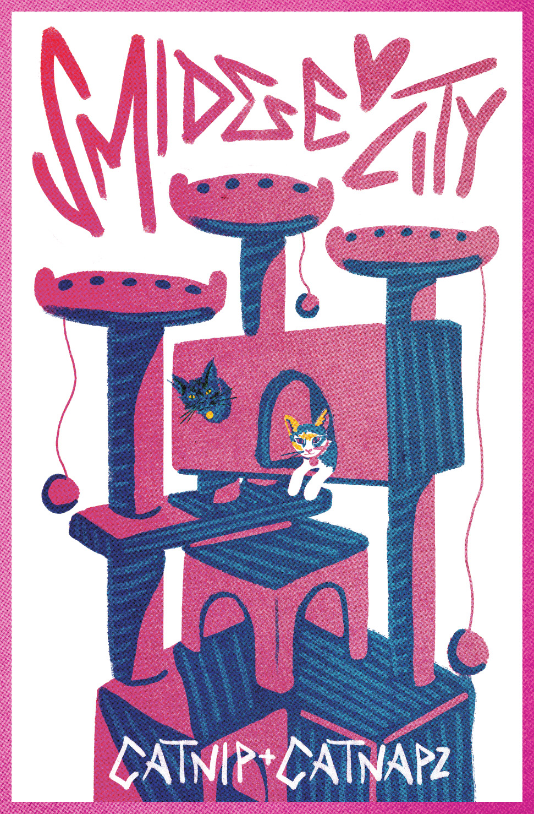

Maya Enfinger, Smidge City, 2026, Digital Art
This illustration was made in Procreate. This poster was made for the intention of creating a Risograph print. The colors are based on the selection that is available to us at the University. I wanted to make a poster of our kitten Smidge in her new cat tower that my dad called Smidge City. I drew the cat tower in pink since that is the color it is and I used blue to create shadow and depth. Since Smidge is a Calico kitten, the third color used minimally, is a sunflower color. The second kitten is Smidge's friend Lelouche.